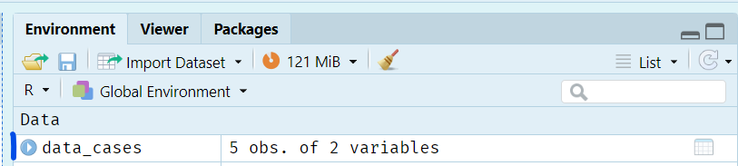

5 + 90
6 * 171
189 / 36.6
92^3
(12 + 9)^4 / 1000Introduction to R
Core
Rstudio interface
R basics
Data types
Your first steps in R. Learn your way around Rstudio, and meet some common R objects
Objectives
- Familiarize yourself with RStudio
- Learn how to work with the console
- Create and execute a script
- Create basic R objects, including vectors and dataframes
Exercise Format
These exercises are in the format of a self-paced tutorial containing short explanations of key concepts, examples, and exercises for you to follow. The course uses a “learning by doing” approach, and while this first session will start a slow, giving you time to explore the RStudio interface, future sessions will focus heavily on having you write your own code.
Instructions for exercices will be given in the following formats:
As you move through these exercises, you may run into some errors. This is completely normal and happens to all programmers, novice and expert. Much like a natural language, R is something you will get better at the more you practice and work through your mistakes.
Errors occur when R is unable to complete a command. This can happen for a lot of reasons, for example because you mispelled the name of an object: you’ve asked R to look for a data file that doesn’t exist, or you’ve provided the wrong type of data to a function. Whenever an error occurs, R will stop any ongoing calculation and give you a message explaining what went wrong. We will see and discuss a lot of different errors throughout this course.
At the end of each session, we ask that you email us your tutorial code. This will help us to assess how everyone is doing as the course progresses and allow us to provide feedbacks or come back on some muddy points.
RStudio and R
R is a functional programming language[Functional programming languages are designed primarily to run analyses and focus on tools for data manipulation, computation, and visualization. This can be contrasted with object oriented languages which are more adept at building complex programs (such as operating systems).] that can be used to clean and manipulate data, run analyses (especially statistical ones), visualize results, and much more.
RStudio is a piece of software that provides a user-friendly interface (or IDE to be precise) for R.1 While using a graphical interface isn’t technically required, it is strongly recommended for beginners.
Getting Started with RStudio
Let’s get started!
You should see an interface that looks something like this:

You will have either three or four panels, including:
Uper Right Corner
To the upper right there will be a panel with several tabs. Many of these are beyond the scope of this course, and we will focus on these two:
Environment. A list of the objects saved by the user in the current session.2 Because you’ve just started a new session, your environment should be empty.
History. A record of all the commands you have executed during the current session.
Bottom Right Corner
To the bottom right there will be another multi tab panel, including:
- Files. A file explorer for the working directory.
- Plots. A location where RStudio will display static visualizations; this tab should be empty for the moment.
- Packages. A list of all the R packages installed on your computer.
- Help. A place to read help pages and documentation for functions and packages.
- Viewer. A location where RStudio will display html outputs.
Documentation refers to additional narrative text either in a code file or an external document that is written to help folks understand what a piece of code, function, or package does and how it should be used. Code documentation is a bit analogous to creating a data dictionary for a set of survey data and is an invaluable part of making robust and reusable code
Left Side
To the left or bottom left (if you have four panels) you should see the console (we will come back to it in Section 3.2).
To the top left (if you have four panels) will be any open scripts (we will come back to it in Section 3.3).
The Console
The console is where R itself is run.
Whenever you open a new session, R will start by printing a bit of information about your set up, such as your R version number. Below this there should be a line containing the > symbol and a blinking cursor. To run a command in R, you simply need to type it in after this > and press Enter. R will then process your code and print the result (if there is one). A new > line will then appear ready for the next command.
Beware of unfinished commands
If the last line shown in the console starts with a + instead of a > that means the console is not ready for a new command either because it is still processing a previous one or because it received a bit of incomplete code. If at any point you would like to cancel an ongoing or incomplete command, press Esc.
3 / (2 + 97We can also run functions in the console:
Scripts
Scripts are text files that contain a series of commands for a particular programming language. The extension of the file indicates which language the commands were written in, and we will be using .R. Scripts allow us to create code that can be reused, shared, and even automated.
Writing Your First Script

To create a new script, follow the menu File > New File > R Script. Alternatively, you can also click on the small green + sign just below the File menu or use the keyboard shortcut CTRL+SHIFT+N. This new and unsaved script will appear as a blank document in the top left panel.
To save your script, either use the menu File > Save As our the keyboard shortcut CTRL+S.
Executing Code from a Script
To run code from a script simply place your cursor on the line you wish to run (or select multiple lines) and do one of the following:
- Click the
Runicon at the top right of the script panel - Use the shortcut
CTRL+Enter(cursor will move to the next line) - Use the shortcut
ALT+Enter(cursor will stay on the current line)
Comments
In R, any text prefaced by a # (until the end of a line) is called a comment. R does not consider comments to be code and will ignore them whenever you run your scripts. This makes comments an excellent way to document your code.
# This is a comment
2 + 3 # This is also a comment[1] 5Comments are also a handy way to split longer scripts into thematic sections, such as “Data Importation”, “Analysis”, “Visualization”, etc. For example:
# NAME OF SECTION 1 -----------------------------------------------
# NAME OF SECTION 2 ----------------------------------------------- Finally, comments allow us write helpful notes for our colleagues (and our future selves!) that can help them understand the code and why we wrote it the way we did. While the exact style and amount of comments that is “best” is debatable, the general rule is to focus on comments that explain “why” rather than “what”. This is because the “what” of well written code should be relatively self explanatory.
This comment, for example, is completely superfluous:
1 + 3 # Code to add one to threeBy comparison, here are a few use cases that would warrant comments:
- You define a constant, say a seroprevalence threshold value. You may want to add a comment providing the reference for where the value comes from.
- Your code contains a value or filename that needs to be updated every week. You should indicate this with a comment to ensure that anyone else using the code is aware.
- You think of an additional bit of analysis or plot that you’d like to add to a particular part of your script. You can use a comment to add a
TODO:(to do) reminding you to come back later.
Tip
While “what” comments aren’t per se recommended in final scripts that we will use for projects or share with our colleagues, do feel free to use them at will during this course to add additional notes that you might helpful during the learning process.
Tip 1: Keyborad shortcuts
You can comment a selected line with the shortcut CTRL+SHIFT+C You can add a first level section with CTRL+SHIFT+R
Data Types
R has several different data types. The ones we will see most often in this course include:
- numeric
- string (text)
- boolean (TRUE / FALSE)
- date
- factor
Numerics
The numeric type includes both integers and doubles (numbers that include a decimal) and can be created by simply writing the value into your script.
Strings
Strings are the R version of text and can be created by surounding text with single or double quotation marks, for example '"istrict" or "cases".
If you would like to create a string that contains a quotation mark the best practice is to escape the character by putting a ’' in front of it, ie: "She said \"Hello\" then left" or 'it\’s a beautiful day'. Equivalently, if you used a double quotation to create the string you can use single quotes inside of it freely (ie: "it’s a beautiful day") and vice versa (i.e.: 'She said "Hello" then left').
Certain characters in R (and in most programming languages) are special, meaning that they are usually a type of command unto themselves. Quotation marks are a good example of this as they are used to tell R to treat a certain word or phrase as a string rather than the name of a variable. Whenever you’d like to use one of these special characters in normal text, you need to explicitly tell R to ignore the ‘special functionality’ of the character. This process is called escaping the special character and is done by placing a ’' directly in front of the character in question.
28 # numeric
"28" # text
28 + "28" # produces an errorThe last command above will give an error because we cannot perform arithmetic operations that combine text and numbers.
Boolean (Logical)
The boolean (or “logical”) type stores true/false values and is created by writing either TRUE or FALSE in all capitals without quotation marks. Technically we can also write T or F but this is discouraged as T and F can also be used as object or variable names. TRUE and FALSE, however, are protected in R, meaning they cannot be reassigned to another value.
Internally, R thinks of TRUE and FALSE as being a special version of 1 and 0 respectively, and boolean values can be easily translated to these numeric equivalents for arithmetic operations.
Determining the Type of an Object
There are several functions to determine the type of an object (often called the class of the object in R).
# Get the Type of an Object
class(28)
class("Mandoul")
# Test the Type of an Object
is.numeric(28)
is.numeric("Mandoul")
is.character("Mandoul")
is.numeric(TRUE)
is.character(TRUE)
is.logical(FALSE)Saving an Object
Before continuing with more complex data structures, we need to take an important detour to discuss how objects are saved into your environment.
Often, we will want to reuse the same values or data throughout a script and it is therefore useful to store them as objects in our environment. To do this we use the assignment operator, <-.
cases <- 28If you’d like to access the value of your new object, cases, you simply need to execute it’s name.
cases[1] 28
Note
The reason we need to wrap strings in quotation marks is actually to allow R to differentiate between strings and object names.
Once created, objects can be used in other commands:
cases + 5[1] 33Updating an Object
We often want to update the value stored in an object. To do this, we simply assign a new value with the same syntax we used to create it in the first place:
cases <- 32Object Names
When naming your objects, there are a few (relatively) hard rules:
- Don’t start with a number
- Don’t use spaces (use a
_instead) - Don’t use protected values (like
TRUEandFALSE) or function names (likemean) - Don’t use capital letters
Beyond these hard rules, there are also more subjective best practices and personal styles. In general aim for names that are short and descriptive:
a <- 19 # BAD (not informative)
age_du_patient_a_l_admission <- 19 # BAD (too long)
age <- 19 # GOODGiving your objects clear and informative names helps to make your code readable, making it easy for others to understand without the need for excessive documentation.
Data Structures
Up until now we have looked only at simple objects that store single values, let’s now turn our focus to more complex structures that can store entire datasets.
Vectors
We can collect multiple values (such as numerics or strings) into a single object, called a vector.
Technically, there are several types of vectors, for example:
-
Simple vectors (or atomic vectors) can only contain one type of values. For example, a numeric vector
2, 4, 6or a string vector"Mandoul", "Moyen Chari". - Recursive vectors (usually called lists) are far more complex and can contain multiple dimensions and types of data. We will not learn about them in this lesson, but there is a satellite module introducing them
This course will not go into detail on the more abstract concepts behind these structures and instead focus only on those you will encounter most often in your daily work.
Simple Vectors
Simple vectors can contain one or more values of a single data type, they thus have two key properties: length and type. For the purpose of this class, we will use the terms “simple vector” and “vector” interchangeably (as is typical in the R community).
You’ve technically already created your very first simple vectors when you built cases and region. These were simply vectors with a length of one. To create a vector with more than one value, we will use the function c():4
cases <- c(2, 5, 8, 0, 4)We can now use functions on the objects we have created:
Accessing the Values of a Vector
It is possible to access the value of a vector using square brackets containing the index (position) of the desired value, ie: [3] or [189].
cases[2] # 2nd value of cases[1] 5cases[10] # 10th value of cases[1] NAOoops it does not exist! We will come back to what this NA means in Section 8.
We can also access a range of values, just as we might do in Excel. To create a range we use the : operator to separate the desired minimum and maximum index:
cases[2:4] # 2nd to 4th values of cases[1] 5 8 0Dataframes
Dataframes are a special type of list that is composed of multiple simple vectors of the same length. Dataframes take the shape of a table where each of these vectors is a named column, similar to a table in Excel. As epidemiologists, this type of data structure is perhaps the most useful and you will likely use them on a daily basis.
Creating a Dataframe
We can create a dataframe using the function data.frame():
data.frame(col1 = c(1, 4, 2, 9),
col2 = c("a bit of text", "some more text", "hello", "epidemiologists")) col1 col2
1 1 a bit of text
2 4 some more text
3 2 hello
4 9 epidemiologistsExploring a Dataframe
data_cases should now appear in your environment. You can click on its name to see some additional information, or click on the blue circle with a white triangle in it to open the object in the Viewer.

There are several handy functions we can use to explore a dataframe:
R comes with several built in data sets that can be accessed directly, including one called iris. We can see the first few lines of this dataset using the function head():
The
iris dataset is convenient because we don’t need to use extra functions to enable you to use it but its content not really interesting to us. Be reassured, we will learn how to import a dataset in the next core session, and work on linelist data onwards.head(iris) Sepal.Length Sepal.Width Petal.Length Petal.Width Species
1 5.1 3.5 1.4 0.2 setosa
2 4.9 3.0 1.4 0.2 setosa
3 4.7 3.2 1.3 0.2 setosa
4 4.6 3.1 1.5 0.2 setosa
5 5.0 3.6 1.4 0.2 setosa
6 5.4 3.9 1.7 0.4 setosaAccessing Data in a Dataframe
In R, there are several methods for accessing the rows and/or columns of a dataframe. We will present a versatile one, and redirect you to the indexing satellite to learn about the use of [[ ]] and $.
We use square brackets to access single values or ranges within our dataframe. To do this we must give R both a row number (or range of rows) and column number/name (or range of columns), using the syntax [row, column].
data_cases[1, 2] # the value of row one, column 2[1] "Mandoul"data_cases[1, "region"] # first value in the region column[1] "Mandoul"If we want to access all of the rows (or columns) we can simple leave a space in the place of the number/name:
data_cases[1, ] # values of all columns in row one cases region
1 2 Mandouldata_cases[2:4, ] # values of all columns for rows 2 through 4 cases region
2 5 Sud Kivu
3 8 Kasai oriental
4 0 Kasaidata_cases[ , "region"] # values of all rows for the region column[1] "Mandoul" "Sud Kivu" "Kasai oriental" "Kasai"
[5] "Haut Katanga" We can even select multiple non-consecutive indices by using a numeric vector:
data_cases[c(1, 3), ] # lines 1 and 3 (all columns) cases region
1 2 Mandoul
3 8 Kasai orientalDo be careful, as the type of output returned when extracting data from a dataframe can sometimes depend on the style of indexing used:
str(data_cases[1 , ]) # returns a dataframe'data.frame': 1 obs. of 2 variables:
$ cases : num 2
$ region: chr "Mandoul"str(data_cases[ , 1]) # returns a simple vector num [1:5] 2 5 8 0 4Another syntaxt to extract the various columns of a dataframe:
data_cases[2] # returns the second column (as a dataframe) region
1 Mandoul
2 Sud Kivu
3 Kasai oriental
4 Kasai
5 Haut Katangadata_cases["region"] # returns the region column (as a dataframe) region
1 Mandoul
2 Sud Kivu
3 Kasai oriental
4 Kasai
5 Haut KatangaNotice that these commands returned single-column dataframes.
Missing Values
As epidemiologists, we work with missing data all the time. In R, missing values are coded using a special value: NA (meaning Not Available). NA is somewhat unique in R as it doesn’t per se have a fixed type, rather, it will take on the type of the values around it. For example, an NA in a numeric column will then take on the numeric type. We will discuss the idea of missing data in more depth in later sessions of the course.
Functions
Functions are objects that contain commands (instead of values) that are run whenever the function is called. You are without doubt familiar with functions in Excel such as SUM and the idea of functions in R is exactly the same.
Most functions require some sort of input, such as a dataset or parameter. These inputs are called arguments and are normally named. For example, when we ran sum(cases), we provided the vector cases as the first (and only) argument to the function sum.
Often, a function will have a combination of both obligatory and optional arguments. The first argument of a function is almost always obligatory and is typically a dataset. As an obligatory and rather obvious argument, most people omit its name when calling a function; ie: i.e. people will write mean(cases) instead of mean(x = cases). Optional arguments on the other hand are usually added using their name, i.e.: mean(x = cases, na.rm = TRUE).
Optional arguments typically have default values and we only include them when we want to change their defaults (and thus change the default behavior of the function). For example, the na.rm argument of mean determines whether R will ignore missing values when calculating a mean. The default state of the na.rm argument is FALSE, so by default, the mean performed on data with missing values will always return NA as the result:5
If we want R to calculate the mean on whatever data is available (and ignore the missing values) we need to explicitly set na.rm = TRUE:
What happens if we put the arguments in the wrong order? Well, if they are named then the function will still work exactly as expected. That being said, doing this would make your code harder to read and we encourage you to stick with a standard order of putting obligatory arguments like data first.
Of course, if you mess up the ordering of arguments and didn’t include their names your code will throw an error:
mean(TRUE, cases) # throws an errorFootnotes
Integrated Development Environments are a group of softwares that provide a convenient interface to use one or more programming languages. Many IDEs are specialized for a specific language (such as RStudio being specialized for R). Others, like VS Code are more general and can be used for any language.↩︎
You can think of an R session like you would think of starting up a computer. Whenever a session starts, everything is blank and ready for computation in the same way that there aren’t any programs open when you first turn on your computer. In general, we encourge you to stop and start your R sessions regularly, you may just find that turning it off an on again will fix some of your bugs!↩︎
Readability refers to how easy (or not) it is for a person to read your code and understand it easily. The spacing of characters within and between lines is an important aspect of what makes code readable. In general, the more we include spacing and the shorter we keep our lines of code the easier it will be to read.↩︎
Mnemonic:
cis the first letter of “concatenate”↩︎this is true for many arithmetic operations in R↩︎